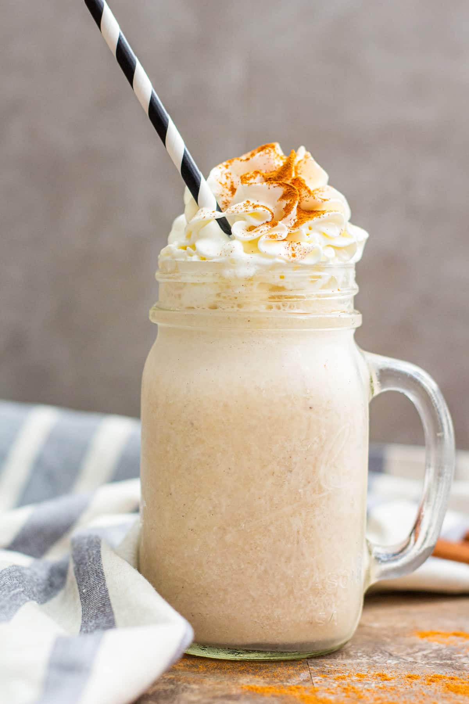

This banana Milkshake recipe is the only one you will ever need!
Unlike other banana milkshake recipes, this one adds peanut butter to the mix and almond milk
It is very easy to follow and any one can make ot as long as they have a blender and the right attitude
You will need the following ingredients:
- A blender
- Bananas
- Peanut Butter
- Almond milk
- Vanilla extract
This are the steps to make the perfect Banana Milkshake:
- Pour 2 cups of Almond milk in your blender.
- Cut your banana in small pieces and put all of it in the blender
- Pour a spoonful of peanut butter in the blender
- Top it off with 2 drops of Vanilla extract
- Blend for 30 seconds
- Pour it in your container of choice and enjoy!